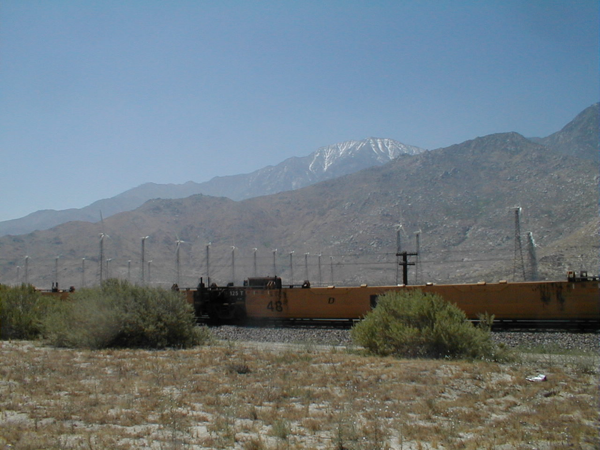

Day 2: May 14, Riverside, CA to Indio, CAPrevious Day - Home - Next Day Photo of the DayThe windmills near Palm Springs, snow capped mountains in the background. Keegan's LogDay 2: May 14, Riverside, CA to Indio, CA Mileage: 81.85 milesWeather: 55-105 degrees, Overcast in the morning, sunny and windy in the afternoon Vertical Climb: 3140 feet Riding Time: hours Today began with some pretty chilly air, we left at 7:15 when it was only 55 degrees outside. The scenery was impressive, we were surrounded by hills and mountains, though much of the peaks were obscured by fog. We had some climbing in the morning, a 3 mile and a 5.4 mile climb up a moderate grade, just to get us warmed up. The climbs weren't like Indiana, you just have to put the bike into a low gear and choose a comfortable cadence, then just pedal for a half an hour until you get to the top. We also crossed the San Andreas fault, though we noticed nothing more than a bad stretch of road. As we started to get warmed up, so did the weather. After the first rest stop, the temperature climbed quickly into the 80s as the cloud cover began to lift. We descended into a valley, and combined with a very strong tail wind, we had some exciting riding! One short stretch on I-10 brought my speedometer up to 42 mph, on level ground too. We traveled about 10 miles at around 30 mph, mostly coasting the whole way. It was heaven while it lasted, but nature often has a way of asking for repayment... We stopped in Palm Springs for lunch at the Blue Coyote Grill. Palm Springs was an odd town, it just appeared as if a mirage in the middle of a desert. It was was also a wealthy town, and even had it's own Rolls Royce dealership. Strange for a town in the middle of a desert. The temperatures began to soar near Palm Springs, it reached 100 degrees by the time we got to the Blue Coyote, and later reached 105 degrees on the way to Indio. The winds also changed abruptly, giving us a brisk head wind to overcome as well. The combination of the heat and the wind made the ride very tough, we began dumping water on our heads to try to keep cool. But after fighting the wind for a bit, we made it to Indio. We are officially in the desert, which means the temperatures are getting warmer, the air is getting drier, and the scenery is getting less and less green. Indio is a pretty small town nestled into a desert valley, the inhabitants seem to have some strange attraction to heat, I suspect they may be cold blooded. The next two days are centuries, both through the desert, though we may be given a tailwind to help us along. Time to head to bed early, need plenty of sleep for tomorrow... Phil's LogThe morning started with a climb out of Riverside, but a wonderful one. The air was still and heavily infused scent of desert flowers, and if one could climb breathing just through the nose, each breath brought a wonderful, sweet smell. Climbing we did. The day started at 55F, the climbing felt good to keep warm. The first was just three miles, that was followed by a ride past wheat fields (short wheat) and a really rough stretch of road, road broken up like the surface of a waffle. It turned out that this was the San Andreas fault.The second climb was through a pass, over probably five miles. This was followed by a sag stop, then a lovely slow descent past a field of wind machines, and into Palm Springs. (The total climb was 3140 feet per my watch.) Most of us stopped at a wonderful Mexican restaurant called The Blue Coyote Grill. It had reached 100F by that point, but ritzy Palm Springs businesses use misters to keep the air cooler. It was yet another wonderful Mexican meal! The road to Indio was deeper into the desert, and the wind began to turn against us. The temp reached 105F (I have a thermometer in my cycle computer) and the ride was turning into a real task. From about miles 62 to 84 was a real HOT chore, occasionally riding in a pace line to cheat the wind a little. At one point about five of us dropped into a taco joint for cokes, and to make fun of one another. Several times I have wondered what I have gotten myself into, I wasn't alone. In a grown man sill way, we were all enjoying it. At five, we met on the front stoop of this, the only motel in Indio, to discuss the strategies of desert riding. Take short sag stops, keep moving, get as far as you can before the day gets any hotter. We have 101.2 miles to Blythe tomorrow. That reminds me, I have to tighten the calibration on my cyclometer, and sleep. If you are the praying type, a word for my left Achilles would be in order. If you are a cyclist that loves travel (Jack Halsey!), this ride is a do-able thing. It is fun and well organized and with training the challenges are the elements, not the distance. So far, this is just day 2. Administrivia: A number have asked where to send the check to DYF. As a reminder, I've asked if those that would care to do so would contribute to a wonderful charity, the Diabetic Youth Foundation (fully deductible) at a rate of one penny per mile ($34.36), one mil per mile ($3.43) or just with your prayers for the work of this fine group with diabetic children in this country and Russia. If you wish to mail a check before Keegan and I finish, please make it out to the Diabetic Youth Foundation and mail to DYF, c/o Phil Brown; 760 Round Court, Zionsville, Indiana 46077-2017. And thank you. |
{kind=link}